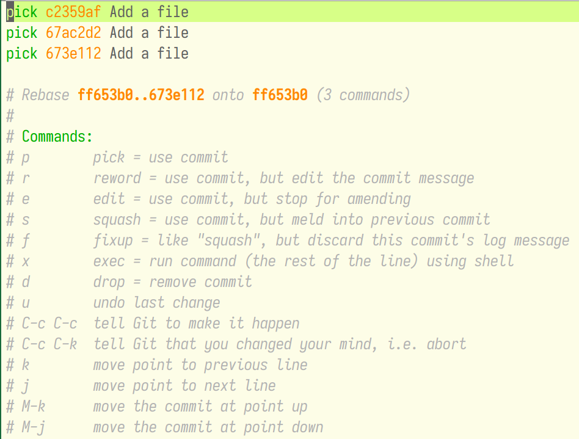

Git 合并多次 Commit 及在 Magit 中的操作
Table of Contents
用 Git 的时候经常会有这么一个需求，就是提交了一次 Commit 后发现还有一个文件忘了 提交进去，或者最近的几次提交都是相似的更新内容。那可以 Reset 到之前的状态再重新 提交，虽然可行，但有的时候会很麻烦。其实在 Git 中 Rebase 也可以简单地实现这个功 能。
1 查看 Git 记录
使用 git log 可以查看最近的提交记录，可以看到我最近提交了三个具有同样信息的
Commit。

2 合并记录
执行 git rebase -i HEAD~3 对最近的三个 Commit 进行合并，其实此处的真实含义是以当
前节点前面的第三个节点为基，并计算当前与该节点的差异，并重新生成 Commit。Git 会
自动地打开 Vim 或什么其它编辑器你可以看到以下文本。

你可以看到每一个 Commit 最前面都有一个描述词，该描述词决定了如何处理该 Commit 。
如此处我只想保留第一个 Commit 的 Message，那么我就将后面两个 Commit 改为 fixup 。

然后保存退出，Git 会自动合并多个历史。如果有冲突，记得解决冲突后，使用 git
rebase --continue 重新回到当前的过程。

3 使用 Magit 合并记录
使用 Magit 进行记录合并与 Git 命令行是相似的。将光标放在要作为基的 Commit 上，并
使用快捷键 r i 。

不同之处在于 Magit 中可以很方便地利用快捷键完成工作。

可以看到注释中已经贴心地列出了快捷键，我们只需要在第二个和第三个 pick 上按下 f
，然后 C-c C-c 提交即可。